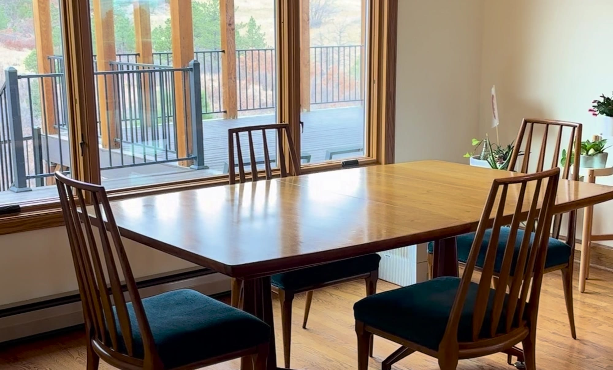
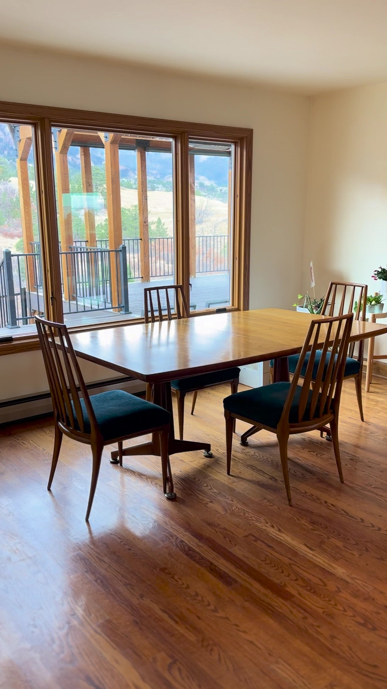

John Widdicomb · Grand Rapids, Michigan · c. 1950s
Ten and a half feet of book-matched walnut.
A double-pedestal extension dining table with three leaves, sculpted solid walnut bases, and a top figured like weather over water. It seats six on a Tuesday. It opens for twelve in December.
The Piece
Closed, it is a room's quiet centre. Open, it is a reason to call people.
Most dining tables are furniture. This one is infrastructure — the thing a family organises itself around for forty years without ever quite noticing.
It was built by the John Widdicomb Company of Grand Rapids, Michigan, in the decade when American furniture was at the very top of its game and hadn't yet learned to cut corners. The top is book-matched figured walnut: consecutive slices off a single log, opened like the pages of a book so the grain mirrors itself across the centre. The pedestals are sculpted from solid walnut — not veneered, not particle-cored, not stapled. Sculpted.
Three leaves came with it and three leaves are still here, which is rarer than the table itself. Leaves get lost. Leaves get left in basements and garages and estate sales. These didn't.

A table this long is a promise that everyone will fit.
Why people buy them
It Extends
Six people. Then eight. Then ten. Then twelve.
Each leaf adds eighteen inches and two more chairs. Slide the pedestals apart, drop the leaves in, and the room changes character. Tap through it below.
Gallery
Look at it in daylight.
Walnut of this grade changes hour to hour. In the morning it reads cool and grey-brown; by late afternoon the figure lifts and the whole top goes amber.
The Maker
A hundred and forty-five years of one family's name on the underside of the furniture.
The Widdicomb story starts with an English-trained cabinetmaker stepping off a boat in 1845 and ends in 2002, when the last company bearing the name closed its doors. In between: a civil war, four sons, a canal-side workshop, and some of the finest furniture ever produced in the United States.
Grand Rapids was the Detroit of furniture
George Widdicomb trained as a cabinetmaker in England, emigrated in 1845, and set up first in Syracuse, New York. But the hardwood forests of Michigan and the river running through Grand Rapids were pulling every furniture man in the country west. He followed them.
By 1857 he had opened a cabinet shop with his four sons — William, Harry, John and George Jr. — and his English training showed. Widdicomb work was simply better made than what surrounded it, and buyers noticed.
Then the war took all four sons at once. George carried the shop alone until it failed in 1864. What happened next is the part worth remembering: the boys came home, and they started again.

-
An English cabinetmaker lands in America
George Widdicomb, formally trained in England, emigrates and settles first in Syracuse, New York.
-
George Widdicomb & Sons opens in Grand Rapids
A cabinet shop run by a father and his four sons — William, Harry, John and George Jr.
-
All four sons enlist. The shop closes.
George keeps the business alive alone through the Civil War until it finally fails in 1864.
-
They come home and start over
William and George Jr. open a small shop near the foot of the East Side Canal. Harry and John join them as they return from service.
-
Widdicomb Brothers & Richards
Theodore F. Richards buys into the partnership on the first day of the year.
-
The Widdicomb Furniture Company is incorporated
The name becomes shorthand, nationally, for furniture that is built properly.
-
John Widdicomb strikes out on his own
He leaves the family firm to found The John Widdicomb Company — the maker of this table — building a reputation on fine case work and refined period design.
-
John dies; his son Harry takes over
The company stays in the family and keeps its standards.
-
The modern era, and this table
The Widdicomb firms attract the best designers in America — T.H. Robsjohn-Gibbings, George Nakashima, and John Widdicomb's own chief designer J. Stuart Clingman, whose sculpted walnut dining furniture defines the company's mid-century look.
-
The name retires after 145 years
Widdicomb closes. The John Widdicomb designs are acquired by Stickley. Nothing further is made — which is why what survives is what there is.
Why It Was Built This Way
Three things a factory today would not do.
One log, opened like a book
Book-matching demands a single walnut log wide enough and figured enough to carry the entire top. The slices are laid open in mirror image. You cannot fake it, you cannot piece it, and you cannot buy logs like that at volume any more.
Pedestals carved from solid stock
The bases are shaped from solid walnut rather than built up from veneered cores. It costs more material, more machine time and more hand finishing — and it is the reason the table still stands dead flat seventy years on.
Leaves cut from the same run
The leaves were milled alongside the top from the same stock, so the figure carries through the joins instead of stopping at them. Replacement leaves never match. These are the originals.
Specifications
The numbers.
Measured, not estimated. If a particular dimension decides the purchase for you, ask and it will be re-measured and photographed against a tape.

| Maker | John Widdicomb Company, Grand Rapids, Michigan |
|---|---|
| Period | Mid-Century Modern, circa 1950s |
| Form | Boat-shaped double-pedestal extension dining table |
| Primary wood | Book-matched figured walnut top; sculpted solid walnut pedestals |
| Height | 28″ |
| Depth / width | 43⅞″ |
| Length, closed | 71¼″ |
| Length, fully extended | 125¼″ (10′ 5″) |
| Leaves | Three, each 18″ — original to the table |
| Seating | Six closed; ten to twelve fully extended |
| Condition | Professionally refinished; excellent throughout |
| Location | Colorado Springs, Colorado |
| Price | $7,500 |
Where It Can Go
It is in Colorado Springs. It will travel.
Local delivery and white-glove placement can be arranged anywhere on the Front Range — Colorado Springs, Monument, Castle Rock, Denver, Boulder, Fort Collins and Pueblo — usually within the week.
Beyond that, regional delivery is available throughout Colorado and into the wider Mountain States: Wyoming, New Mexico, Utah, and western Kansas and Nebraska. Blanket-wrapped, leaves crated separately, carried in and set up in the room where it will live. Nationwide freight can be quoted on request.
You are also welcome to come see it. A table like this does not photograph as well as it stands.

Questions
What buyers ask.
How large does it get with all three leaves?
Closed it is 71¼ inches. With all three 18-inch leaves in, it reaches 125¼ inches — ten feet five inches — which seats ten to twelve comfortably.
Is it a genuine John Widdicomb?
Yes. It is a product of the John Widdicomb Company of Grand Rapids, Michigan, dating to the 1950s. Pieces from this era typically carry a stamped or branded maker's mark on the underside of the top or on the leaves, and photographs of the mark are available on request.
What does "book-matched" actually mean?
Consecutive slices are taken from the same walnut log and opened side by side like the pages of a book, so the grain mirrors itself across the centre seam. It requires one log large enough to yield the full width — which is why it is so seldom done at this scale now.
Will it fit my dining room?
Allow 36 inches of clearance around the table for chairs and walking room. Closed, it wants a room of roughly 12 by 10 feet. Fully extended, plan on about 17 by 10 feet — or do what most owners do: run it short all year and open it for the holidays.
What condition is it in?
Professionally refinished and excellent throughout. The pedestals, apron and all three leaves are structurally sound. A full written condition report and close-up photographs of any area you want to see are available before you commit.
Can I see it before buying?
Yes, and you should. It is viewable by appointment in Colorado Springs.
Inquire
Seventy years in, it is still waiting for a full house.
Ask anything — measurements, the maker's mark, delivery to your town, or more photographs of any detail you like.